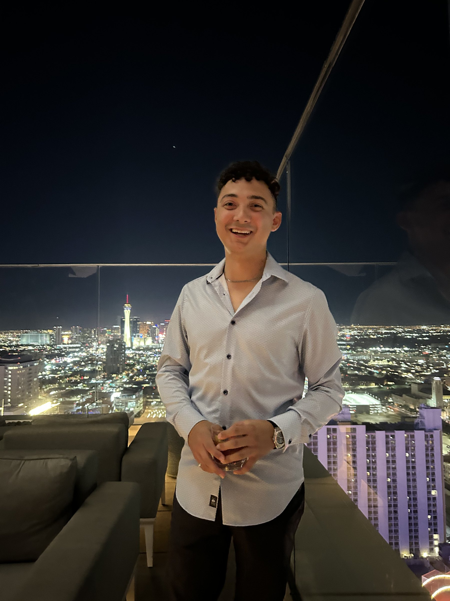

The person behind the bar tab
Hi, I’m Thomas, your designated drinker.
Rated by Thomas is my personal bar notebook: the places I’ve visited, the drinks I’ve tried, and the order I see fit.
DRINKING, out of bars around the world… holding a professional record of zero unpaid bar tabs… standing five Negronis tall and weighing in at a BAC I’ve been legally advised not to publish… drinking out of Las Vegas, Nevada, by way of Portland, Oregon… presenting the undisputed amateur drinking champion of the world—Thomas “BIG ROCK” La Centra!
My cocktail journey starts in my 10am spirits class, overlooking the beautiful Las Vegas Strip. I had the privilege of telling my then-employer that for all my Monday shifts, I may arrive slightly tipsy. And not because I hit the Chandelier Bar before work, but because my grade actually depended on tasting the subtle differences between a scotch and a rye.
Growing up, my dad was more of a wine guy. And in college, of course, the drink of choice for everyone was beer. My heart was never in either. The sweet, sweet taste of 40% ABV hooked me like the rainbow trout I used to fish for at Trillium Lake in Oregon.
I think it’s important to also state that I am in no way a fan of getting drunk—well, maybe every once in a while. But for me, that is the beauty of cocktails. I would not even remotely consider myself someone who can drink a lot, but I guess I’ve built up a tolerance for a $20 drink with a side of peanuts.
My passion for spirits, cocktails, and bars truly comes from the craft. The ratios, type of ice, glassware—everything intrigues me. Where do I put the sentence of me having a hard-on for anything fat-washed about five years ago? Apologies for that image… unless you liked it, in which case you can follow me on Instagram ;)
I should probably establish some credibility so you know I’m not completely blowing smoke out my butt. I worked in Food & Beverage for various establishments in the great city of Las Vegas for six years. I took a leap to management before ever becoming a bartender, but I got really good at pouring chilled 1942 shots while barbacking at a pool bar. So while I’m certainly no master mixologist, I have spent enough time on both sides of the bar to know when one deserves another round.
So why a website? Well, I realized that I have garnered a pretty well-stamped drinking passport. One of my favorite things to do while traveling is to visit the city’s bars and try the local spirits. Selfishly, I wanted a better medium to save my thoughts when giving recommendations. Saved places in Google Maps and my Notes app were starting to get a bit cluttered. But additionally, the idea of sharing my passion with others who enjoy a good drink really sparked me to create this. The bar space, to me, is truly a family, and I’d love to cultivate a community of world drinkers here at Rated by Thomas. Cheers.
And lastly, we have one rule around here: you’re not allowed to take a shot by yourself. So find a friend or put the bottle back on the shelf. We promote the great world of drinks, but remember to do so responsibly.
How I rank
The ranking is my overall preference. I weigh taste and atmosphere subjectively. Cocktails are fun, bars are silly, there’s no math in these rankings.
The two scores
Taste reflects my overall impression of the drinks I tried. With one drink, that’s what I have to go on. With several, I list them in order of preference and give one Taste score for the bar.
Atmosphere is the experience of drinking there: the setting, service, music, and how the bar makes me feel. I prefer upscale cocktail bars, but I judge each place for what it’s trying to be.
Both are scored out of ten. There’s no combined score.